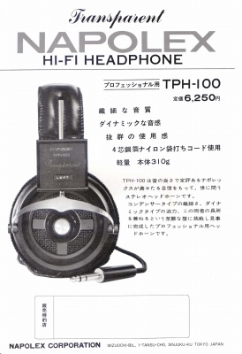
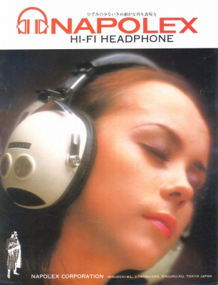
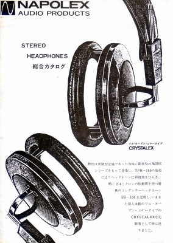

NAPOLEX (ナポレックス） カタログギャラリー
(カタログ画像をクリックすると原寸大のPDFファイルが開きます）
�@創業当初？のカタログ THP-100と４チャンネルステレオアダプターQA-10のカタログ。

�A1971年頃のカタログ WIDEシリーズのカタログ。

�Bフルオープン型の「CRYSTALEX」などのカタログ フルオープン型の「CRYSTALEX」やコンデンサー型のES-100などのカタログ。
